-
This is what I started with. Lots of rust from battery acid. The yellow color
is from a two part zinc chromate two part epoxy primer that was used to repair
the battery shelf and area behind the battery.
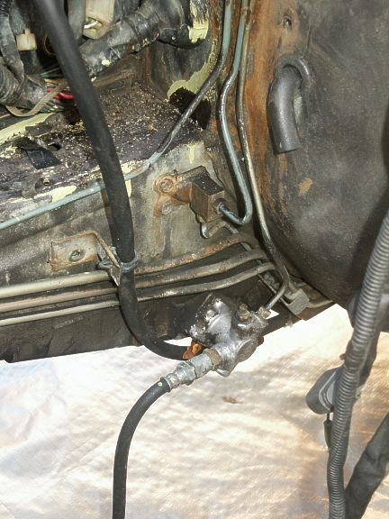
Zinc chromate epoxy was applied during the frame rail repair and
modification which I will discuss in a later posting.
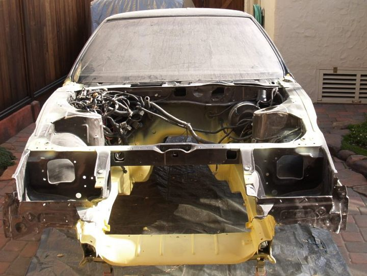
Prior to the repaint, the front panels of the head light wells on either side were
replaced due to damaged.
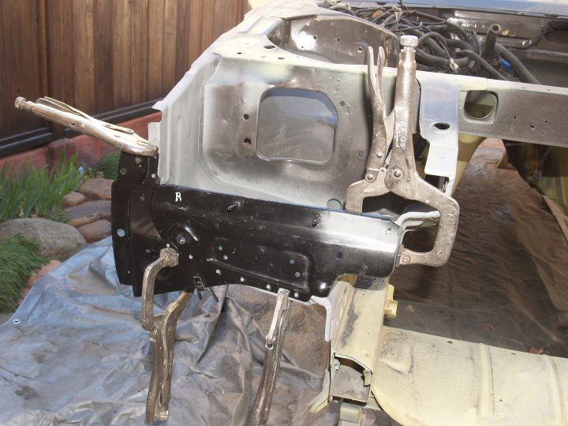
This is what it looked like after two days of sanding and an application of a light
gray two part epoxy primer applied to damaged paint areas.
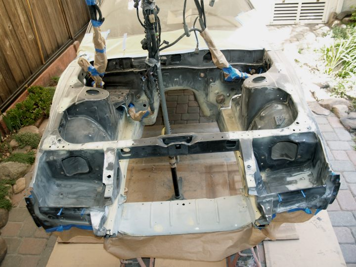
Several areas where the sheet metal joined was filled with Sikaflex 1A, a moisture cure
elastomeric urethane caulking compound.
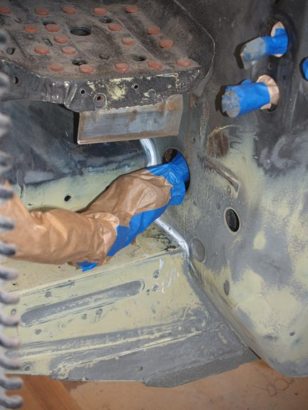
Then the bay was primed with the above mentioned epoxy primer. The wiring was
held out of the way with a construction light stand.
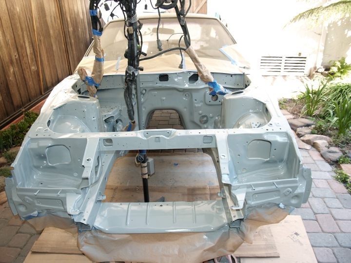
After an over night dry, another day was spent sanding and a dark gray epoxy contrast
primer was applied to bare metal areas.
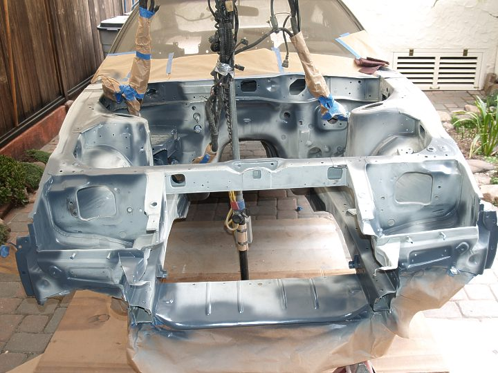
More sanding and the last bit of bare metal coated with a white two part water base
epoxy primer that I used earlier in the day for the hard fuel lines restoration which
will be covered in a later posting when completed.
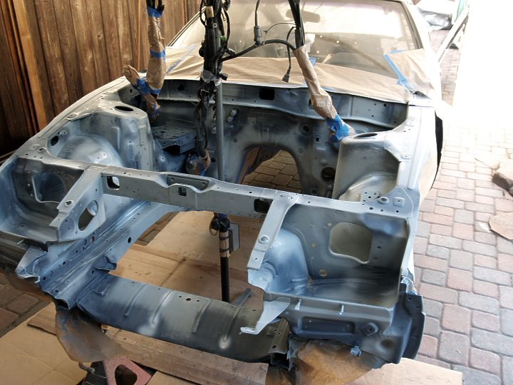
Sunday (09/15/2013), the engine bay got its final finish coat of PPG Delstar single stage
acrylic enamel (purchased 06/16/04). This PPG product is no longer made. With a little
over two pints left from an earlier aborted attempt at restoration, I asked the Creative
Force(s) to allow me to complete the job with what I had on hand. Amazingly, I finished
right down to the last drop in the can.
And there you have it. Next comes the installation of the recently purchased SS hard hydraulic
lines and the above mentioned refinished fuel lines.
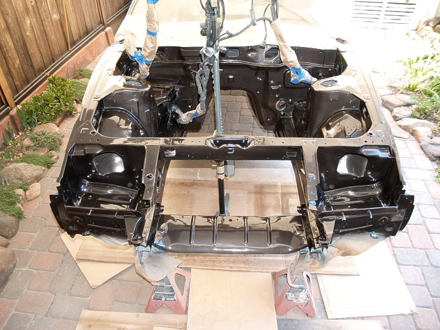
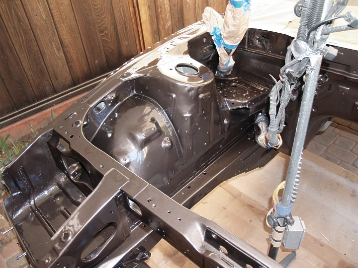
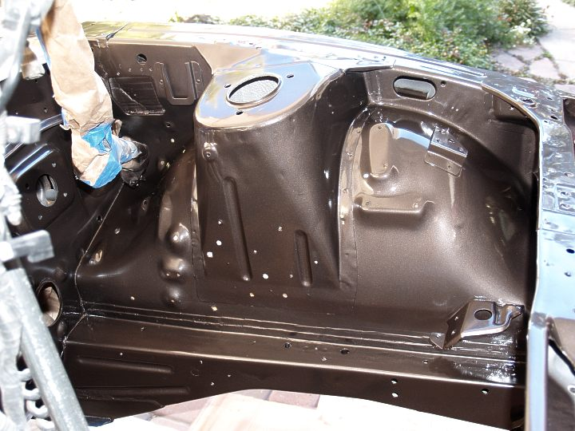 -
Very sexy. Keep up the good work and keep us posted you know how we love pictures!
you know how we love pictures!
I wish I could repaint my engine bay. I'll get to it when I start doing an engine swap.1986 300ZX factory Turbo 2+2 5 speed swap. 1985 Toyota MR2. Floor boards gone. Good fabrication practice.

-
Awesome work Gary, Thanks for detailing what products you are using too!
I look forward to seeing how you refurbed the fuel lines.
The vinyl coating on the lines for my AE look pretty bad.
84 AE/Shiro #683/Shiro #820/84 Turbo -
Yeah, looks great! I'll be looking forward to the hard line refinish, too.1987 GL Slicktop | SS 729 Under Renovation -
Sweet! Reminds me of when I did mine.
1986 300ZX Turbo…sold
1990 Skyline GT-R…new money pit
2014 Juke Nismo RS 6-speed…daily -
God damn Gary, that looks great. If I'm even half as mobile and sharp as you are at your age I'll be ecstatic.

1988 300zxt. gt35, stance, etc. Wheels: Varrstoen ES2 18x9.5 et-13 225/40. 18x10.5 et0 245/40
1990 jetta vr6'd -
As always fantastic and meticulous work.DD:
86 Black Turbo 5spd
The Fallen:
84 red n/a auto Slicktop, 86 Black 2+2 n/a 5spd
Parting Currently:
86 White Turbo 5spd, 88 n/a 5spd, 84 AE, 88 Shiro #64
Garage Sale

Copyright © 2006–. All rights reserved. Privacy Policy